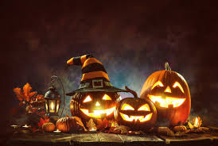
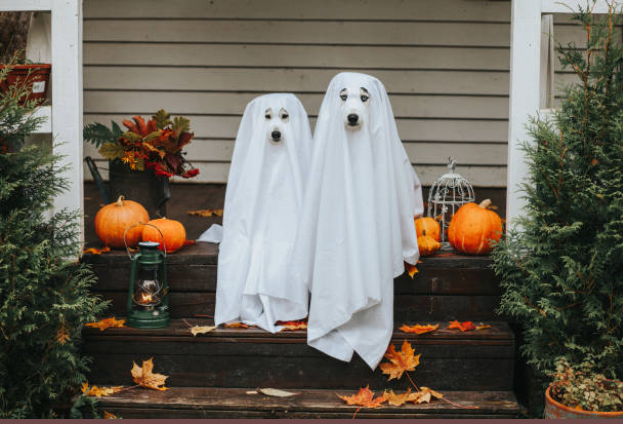
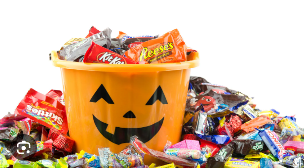

Halloween, celebrated every October 31st, is a spooky and exciting holiday for people of all ages. It’s a time when the veil between the living and the dead is believed to be thinnest. The streets come alive with children dressed as witches, ghosts, and superheroes, going door-to-door asking for candy with the familiar phrase, “Trick or treat!”
Halloween isn't just about candy—it's about community, creativity, and thrills. Many people decorate their homes with cobwebs, skeletons, and creepy lights. Haunted houses attract thrill-seekers, while pumpkin patches are full of families looking for the perfect carving pumpkin.
Adults join in the fun with costume parties, scary movie nights, and themed baking. Popular treats include caramel apples, pumpkin-shaped cookies, and candy corn. In recent years, Halloween has grown to include parades, dog costume contests, and themed events in schools and workplaces.
